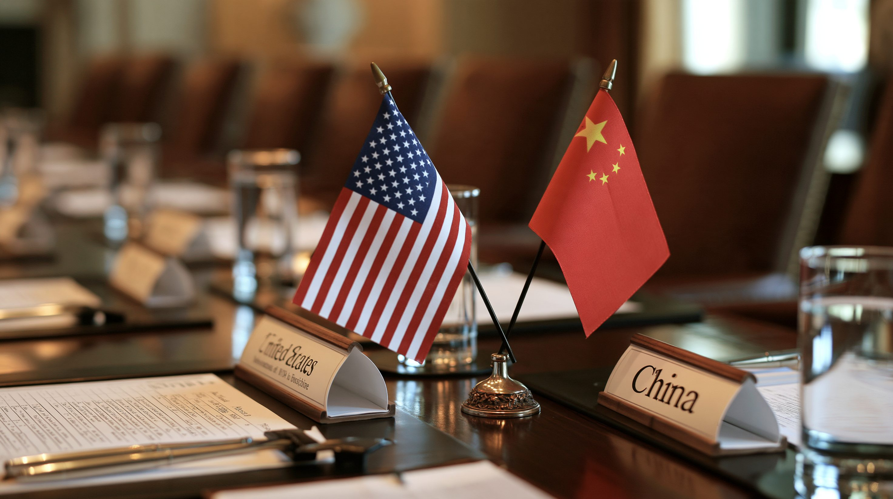
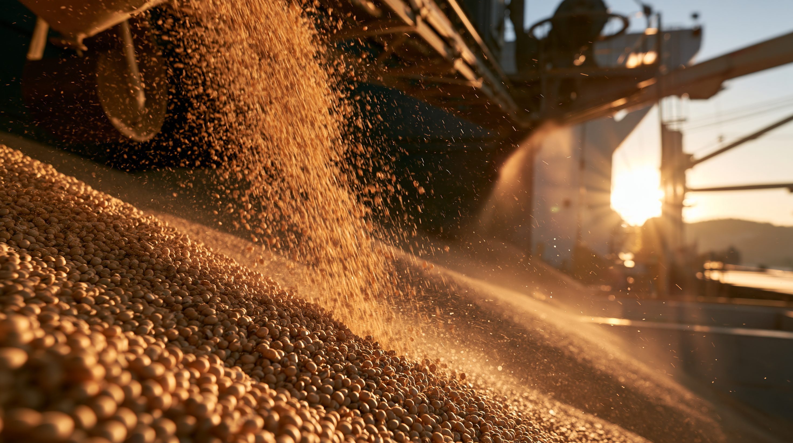
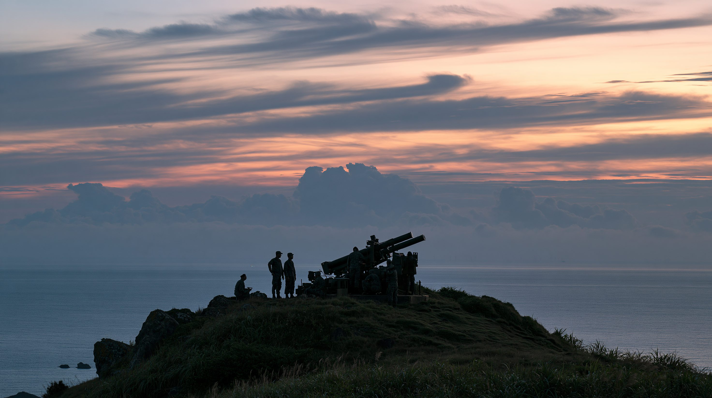
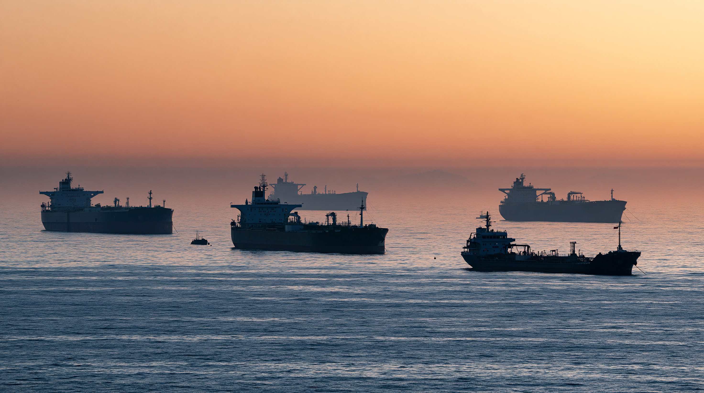

01論点 — 貿易休戦の延長と、譲れない台湾
習近平国家主席が9月23日から25日（現地時間）の日程でワシントンを訪問している。中国の国家主席が国賓としてアメリカを訪れるのは2015年9月以来で、5月の北京訪問に続き、今年2回目の対面会談となる。24日にホワイトハウスで行われた会談は約3時間に及んだ。この記事は、初日の会談を終えた時点（日本時間9月25日）の報道をもとに、両国の要求と思惑を整理する。
会談の構図は単純ではない。貿易休戦を続けたい思惑は両国とも一致している。だが台湾、半導体などの先端技術、そしてイラン戦争をめぐっては、要求が正面からぶつかり合っている。とりわけイラン戦争でアメリカの軍事的な余力が削られているとされるなか、中国が「イランへの圧力」と「台湾での譲歩」を結びつける取引を示唆しているとの報道もある。
会談は25日（現地時間）の最終日を残しており、共同記者会見や共同声明は予定されていないと報じられている。
両国はそれぞれ何を求め、何を差し出せるのか。台湾は、その取引の材料になるのか。

02タイムライン — 釜山からワシントンまで
今回の会談は、2025年10月の釜山会談から11か月をかけて積み上がった経緯の上にある。貿易休戦、イラン戦争の勃発、5月の北京訪問、そして直前の同盟国間の協議まで、順を追って見ていく。
アメリカの対中関税を平均57%から47%へ、フェンタニル関連の関税を20%から10%へ引き下げることで合意。中国はレアアース輸出規制の実施を1年停止し、アメリカも一部の輸出規制を1年停止した。大豆など農産物の輸入再開も、この合意に含まれていた。
釜山会談から1か月余りで、アメリカは台湾向けとして過去最大となる約111億ドルの武器売却を承認した。
アメリカとイスラエルによるイラン攻撃で戦争が始まった。3月27日には、イラン革命防衛隊がホルムズ海峡の封鎖を宣言した。
「建設的戦略安定関係」の構築で一致し、中国はボーイング機200機の購入に合意した。中国によるアメリカ製旅客機の発注は2017年以来となる。イランに核兵器を持たせないことと、ホルムズ海峡の開放維持でも一致したが、習氏は台湾を「最も重要な問題」と位置づけ、「台湾独立と台湾海峡の平和は水と火のように相いれない」と警告した。この後アメリカは、過去最大となる140億ドルの台湾向け武器売却案を保留し、トランプ氏はこれを「とても良い交渉カード」と表現した。
9月20日、ニューヨークでベッセント財務長官と何立峰副首相が会談し、アメリカはAIの安全に関わる事故を互いに通報する仕組みを提案した。21日には日米韓の外相が共同声明を発表し、台湾海峡の平和と安定の重要性、一方的な現状変更の試みへの反対を確認。22日には高市首相とトランプ大統領がニューヨークで会談し、中国をめぐる連携強化で一致した。
トランプ氏が空港で習氏を出迎えた。同日、ベッセント財務長官が貿易休戦を2か月延長し、2027年1月10日までとすると発表した。
トランプ氏は「共通の利益の追求は多くの違いを乗り越えて両国民を結びつけ、第2次世界大戦において私たちを同盟国にした」と述べた。当時アメリカと同盟していたのは、1949年成立の中華人民共和国ではなく中華民国（蒋介石政権）だった。習氏は台湾について「米国側が台湾独立に反対するという正しい立場を堅持し、台湾問題を慎重に処理するよう望む」と述べ、イランについては「対話と交渉への復帰を支持し、各方面が包括的な合意に達することを望む」と表明。AIについては「人間がAI技術の制御を保ち続けなければならない」と述べた。習氏はジャイアントパンダ2頭をアトランタ動物園に送ると表明した。
茶会と国立公文書館の見学が予定されている。共同記者会見や共同声明は予定されておらず、両国がそれぞれ自国向けに発表する見通しと報じられている。

034つの視点 — 何を求め、何を差し出すか
同じ会談を、当事者と関係国はそれぞれ異なる立場から見ている。まず4つの視点を見たうえで、論点ごとの要求と、両国の思惑を表で整理する。
表は横にスクロールできます
| 論点 | アメリカの要求 | 中国の要求 | 台湾の懸念 | 会談での扱い |
|---|---|---|---|---|
| 貿易休戦の延長 | 延長は短くし、既存の約束が守られるか見極める | 長期の延長（2年程度と報道） | — | 2か月延長し、2027年1月10日までとすることで合意 |
| 関税・購入約束 | 遅れている農産物170億ドル分の購入と、レアアースの引き渡し | 対中関税の引き下げ（報道） | — | 大豆2,500万トンの購入は順調、その他の農産物とレアアースは遅れ。重要でない品目300億ドル分の関税撤廃は発表があり得ると報じられた段階 |
| 台湾向け武器売却 | 140億ドルの売却案を保留し、「交渉カード」として手元に置く | 売却の停止と、発注済み兵器の引き渡し阻止 | 予定どおりの実行。台湾が取引材料にされること | 保留が続き、結論は出ていない |
| 台湾の位置づけ | 5月の北京会談後、トランプ氏は台湾独立を支持しないと発言 | 「台湾独立に反対」という立場の堅持と、慎重な処理 | 頼総統は台米関係を「盤石」と強調 | 習氏が「正しい立場の堅持」を求めた。アメリカ側の回答は報じられていない |
| 先端半導体 | 輸出規制の維持 | 輸出規制の緩和（報道） | — | 目立った進展は報じられていない |
| イラン・ホルムズ海峡 | 中国がイランに圧力をかけ、海峡の通航を回復させること | 対話と交渉への復帰を支持。台湾での譲歩との交換を示唆（報道） | 台湾がイラン問題の交換条件にされること | 交換は提案の段階で、トランプ氏が受け入れた兆しはない |
| AIの安全管理 | 安全保障を脅かすAI事故を相互に通報する仕組み | 「人間がAI技術の制御を保つべき」と表明。通報の提案には公式に触れず | — | 20日の閣僚協議で米中AI対話の設置に一致。首脳会談での合意は報じられていない |
台湾の列は、台湾が直接かかわる論点のみ記載。会談での扱いは、初日の会談を終えた時点（日本時間9月25日）の報道にもとづく。
表は横にスクロールできます
| アメリカ（トランプ政権） | 中国（習近平政権） | |
|---|---|---|
| 最優先 | 11月の中間選挙を前に、燃料高とインフレを抑えること。そのためのホルムズ海峡の通航回復 | 貿易休戦を維持し、関係を安定させること（報道） |
| 手札 | 台湾向け140億ドルの武器売却、対中関税、先端半導体の輸出規制 | レアアース・重要鉱物の供給、イランの海上原油輸出の約8割を買う立場 |
| 抱える事情 | イラン戦争は一時停戦を挟み7か月目。ホルムズ海峡の通航は戦前の約1割、弾薬の消耗も指摘されている | 対米投資は細っている（2025年に発表された対米直接投資は30億ドル未満で、2010年代半ばのピーク以降で最低）。5月に合意した投資協議会も動いておらず、投資を増やす前に政治的な保証を求めている（報道） |
| 見せたい姿 | 「共通の利益が、第2次世界大戦で両国を同盟国にした」と述べ、友好を強調 | 11年ぶりの国賓訪問で、アメリカと「対等」に並ぶ姿 |

04データ — 細る対中貿易と、貿易休戦の履行状況
アメリカの対中貿易は、2025年に輸出入とも大きく落ち込んだ。2026年に入ってからの推移と、貿易休戦で約束された事柄がどこまで果たされているかを見る。
アメリカの対中輸出入（2017〜2025年）
単位は10億ドル（財の貿易、名目）。2025年の対中輸入は3,087億ドルで、2017年の5,052億ドルから約4割減った。2026年1〜7月の輸入は1,564億ドルで、前年同期（1,940億ドル）を約2割下回っている。
出典：アメリカ国勢調査局の対中貿易統計
表は横にスクロールできます
| 品目 | 約束の内容 | いつの約束 | 状況（ベッセント財務長官の評価） |
|---|---|---|---|
| 大豆 | 中国がアメリカから年2,500万トンを購入（2026〜2028年） | 2025年10月 釜山会談 | 順調 |
| 大豆以外の農産物 | 中国がアメリカから年170億ドル分を購入（2028年まで） | 2026年5月 北京会談 | 遅れている |
| レアアース | 中国がアメリカ向けの輸出規制を止め、供給を続ける | 2025年10月 釜山会談 | 引き渡しが遅れている |
05深掘り — 弱いアメリカ、強まる中国の手札
※ ここから先は、ここまでの事実にもとづく筆者個人の見解です。
現時点で確定しているのは、貿易休戦を2か月延ばしたことだけである。台湾、半導体、イランをめぐる要求は、双方とも譲っていない。
